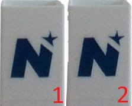

Ausgangslage
Fehler im 3D-Druck – etwa Löcher oder Maßabweichungen – fallen oft erst am Ende eines stundenlangen Drucks auf und kosten Material und Zeit. Ein vorangegangenes Projekt hatte gezeigt, dass reine 2D-Aufnahmen der eingebauten Druckerkamera an ihre Grenzen stoßen. Ziel dieses Projekts war es daher, die Fehlererkennung durch eine 3D-Kamera mit zusätzlichen Tiefeninformationen zu verbessern.


Umsetzung: zwei Segmentierungsansätze
1. Histogrammanalyse mit Tiefeninformation: Der bestehende Algorithmus auf Basis der Maximal Histogram Acceleration (MHA) wurde um die Tiefendaten erweitert. Farb- und Tiefensegmentierung wurden per ODER- bzw. UND-Verknüpfung kombiniert. An den Objekträndern brachte das kaum Verbesserung, beim Schließen von Lücken in der Maske jedoch einen klaren Vorteil – Löcher im Druck werden so früher sichtbar.
2. Neuronales Netz mit Tiefen-Prompts: Der MHA-Algorithmus wird zeilenweise auf die Tiefendaten angewendet, um den Übergang zwischen Druckbett und Objekt automatisch zu finden. Diese Übergangspunkte dienen als Prompts für Metas Segment Anything Model (SAM), das sich als robust gegenüber Reflexionen, Über- und Unterbelichtung erwies. Mehrere Prompts entlang der Übergänge lieferten deutlich weniger Artefakte als Prompts in den Ecken.

Vermessung & Fehlererkennung
- Höhe: erste und letzte Zeile der Segmentierungsmaske mit ausreichend Objektpixeln
- Breite: zeilenweise über Minimum und Maximum der Objektpixel
- Fläche: Summe der Objektpixel innerhalb definierter Tiefen-Schwellwerte
- Abgleich: XOR-Verknüpfung mit einer Referenzmaske liefert den Pixelfehler pro Zeile; Schwellwerte reduzieren Fehlalarme
Ergebnisse
Der Prototyp wurde mit der manuellen Segmentierung durch drei Testpersonen verglichen. Die Tabelle zeigt die Abweichung der Gesamtfläche von der Referenz in Prozent:
| Testlauf | Prototyp | Person 1 | Person 2 | Person 3 |
|---|---|---|---|---|
| 1 | 7 | 6 | 15 | 11 |
| 2 | 2 | 1 | 3 | 3 |
| 3 | 3 | 5 | 4 | 7 |
| 4 | 5 | 2 | 3 | 4 |
| 5 | 4 | 6 | 11 | 4 |
Der Prototyp liegt damit auf dem Niveau der manuellen Segmentierung. Außerdem wurde festgestellt, dass die RealSense D435 bereits ab 20,5 cm vollständige Tiefendaten liefert (Datenblatt: 28 cm). Als nächste Schritte bieten sich mehr Testläufe, mehrere Kameraperspektiven und die Umrechnung der Pixelwerte in Millimeter über die Tiefeninformation an.
Hinweis: Die Ergebnisse beruhen auf einer begrenzten Anzahl an Testläufen und sind als erste Basis für weitere Untersuchungen zu verstehen.
Zurück zu den Projekten